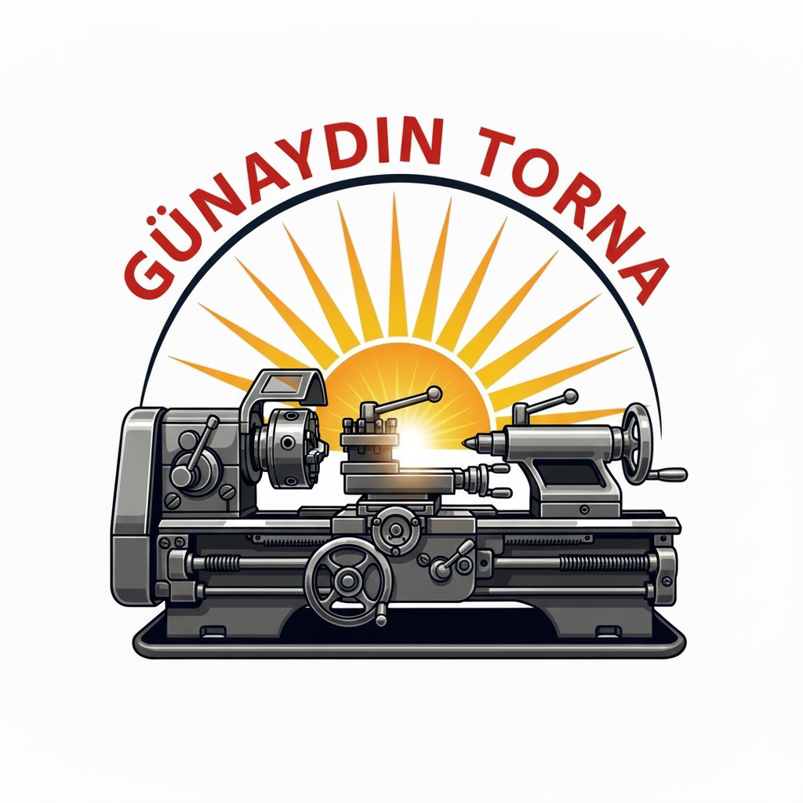

Günaydın Torna
1930'Dan Beri Demirciliğin Adresi
Bize Ulaşın
Korozyona dayanıklı paslanmaz çelik (krom) malzemelerin kaynak ve işleme taleplerini hijyen ve dayanıklılık gerektiren sektörler için özel olarak karşılıyoruz.


Endüstriyel tesisler için özel olarak tasarlanmış, güvenli ve yüksek kaldırma kapasiteli gezer köprülü vinç sistemleri üretiyor ve montajını anahtar teslim gerçekleştiriyoruz.
Endüstriyel tesisler ve boru hatları için kritik öneme sahip olan vana montaj işlemlerini standartlara uygun ve sızdırmazlık garantisiyle yapmaktayız.


Parçaların istenen hassasiyette ve kalitede işlenmesini sağlayan temel hizmetimizdir. Yüksek teknoloji torna tezgahlarımızla en karmaşık projelerinizi bile başarıyla tamamlıyoruz.
Sanatsal ve mimari metal işçiliği alanında, özgün tasarımlarla ferforje kapı, pencere, korkuluk ve çit imalatı yapıyoruz.


Sanayi makinelerinizin ömrünü uzatmak ve verimliliğini artırmak için periyodik bakım ve arıza onarım hizmetleri sunuyoruz.